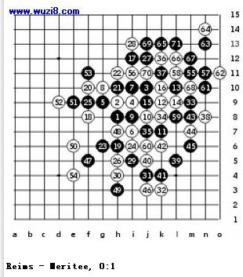
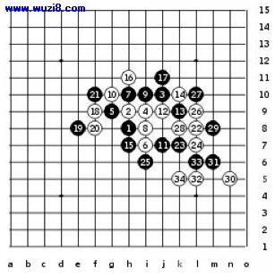

世锦赛亚军：成功还是失败？ （二）
#1 世锦赛亚军：成功还是失败？ （二） 作者：茗弈宽容 发表时间：2009-7-6 9:51:18


尽管两场比赛我得了2分，但我对自己很生气。怎么回事？我下得根本不象在世界杯比赛。而更像是一个周末下午的比赛。我决定在第三场对Reims的比赛中全神贯注。Aldis Reims可能是在Soosõrv以后我遇到的第二强的对手。他以第13手向我发起挑战。14本手。第16手很好地体现了我的风格。许多人或许会选择16 -i11。17手以后我开始后悔我的16手。我思考了很久。一个变化不成,另一个也行不通。攻击还是防守？上还是下？左还是右？我快要发疯了。最后我找到了18，20和22。23缓招。赛后我们进行了大量的分析并且发现了黑棋最好的方法是：23-h5, 24-i6, 25-i5, 26-g5, 27-f4, 28-h4等等。最终败着是25手。
/*760*90，创建于2012-2-9*/ var cpro_id = 'u761865';
#2 Re:世锦赛亚军：成功还是失败？ （二） 作者：吃大米饭的鱼 发表时间：2009-7-6 12:14:49
这是安度老师写的吧，看不太懂。